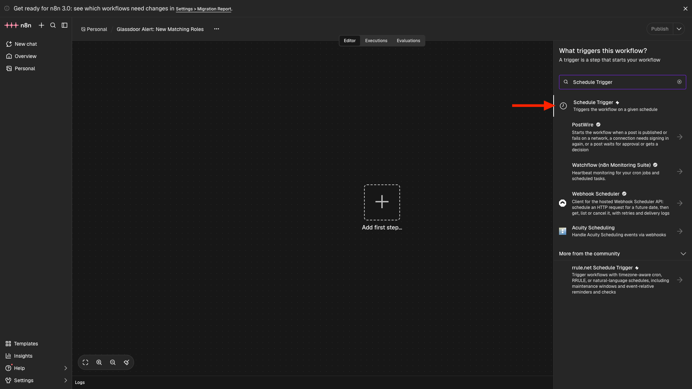
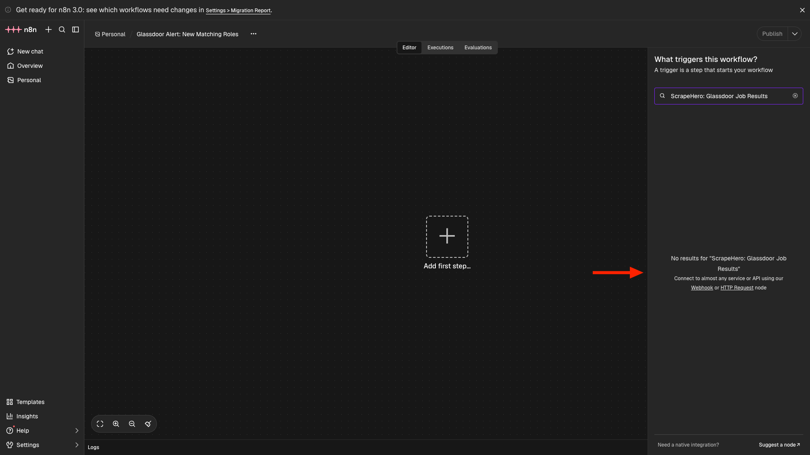
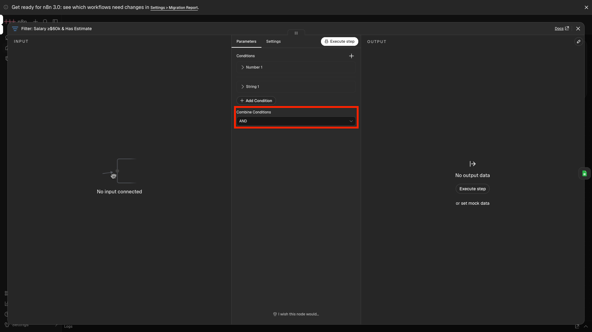
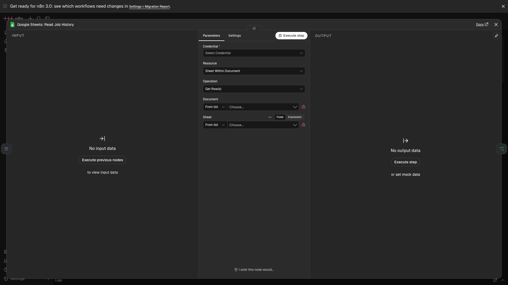
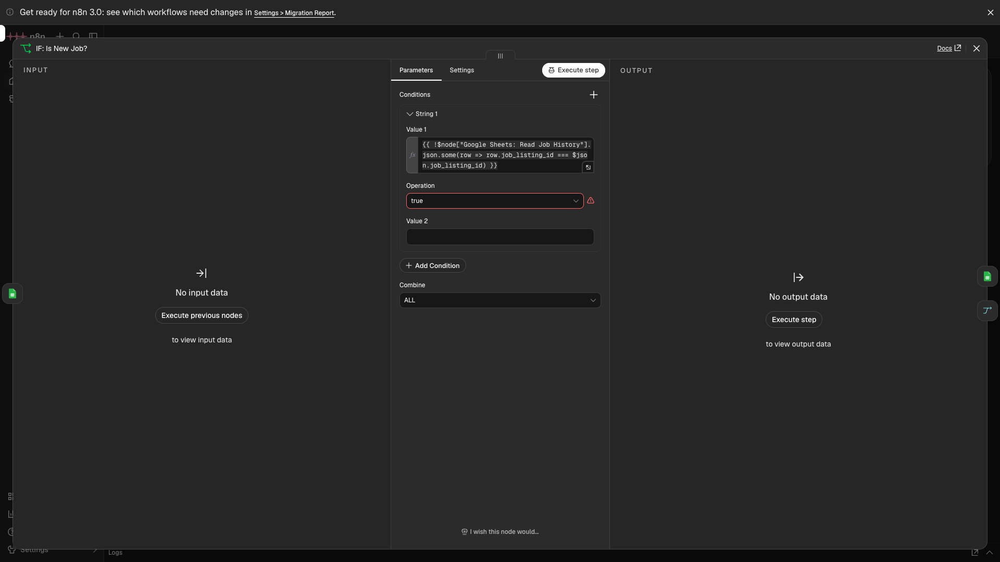
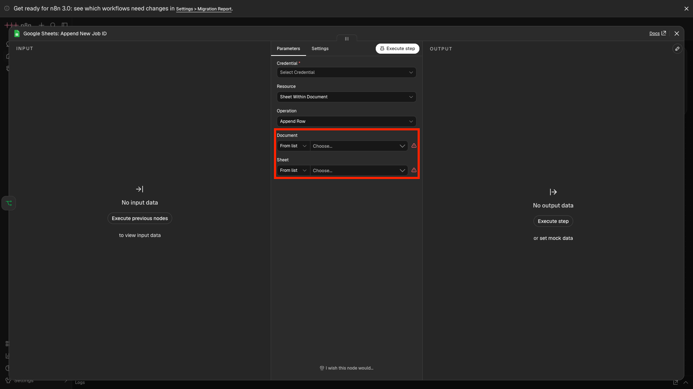
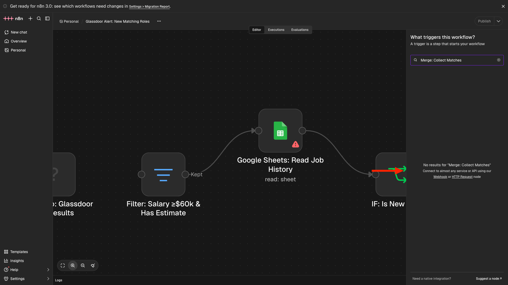
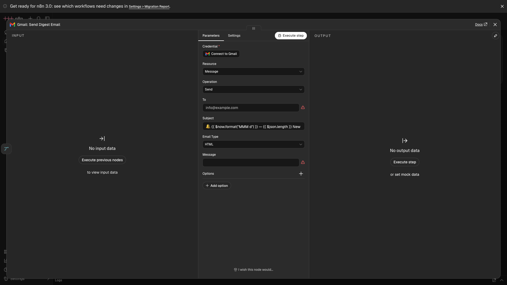
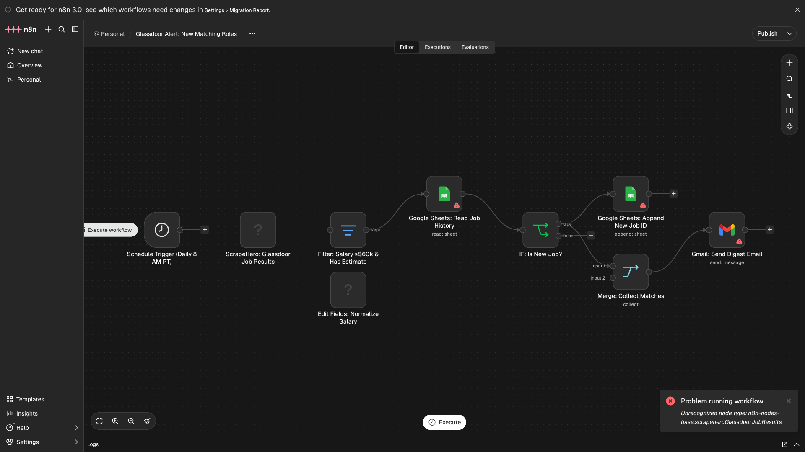

Stop checking Glassdoor manually. Build an n8n workflow that searches for you, filters by your criteria, and emails new matching roles every morning—without duplicates.
What You'll Build
A daily 8 AM PT workflow that:
- Searches Glassdoor for Marketing, Graphic Designer, and Software Developer roles in California, New York, and Nevada (9 searches total)
- Filters for salaries ≥ $60,000/year (ignores listings with no salary estimate)
- Tracks
job_listing_idin Google Sheets to never alert on the same job twice - Sends one digest email with all new matches to
madhu.dath@scrapehero.com
Prerequisites
- n8n (self-hosted or n8n.cloud)
- ScrapeHero Glassdoor API access — enabled on your ScrapeHero account
- Google account — for the deduplication sheet
- Gmail account — for sending alerts
Step 1: Create the Deduplication Google Sheet
- Open Google Sheets and create a new spreadsheet named Glassdoor Job Alert History.
- In the first sheet (tab), rename it to Job History.
- Add these headers in row 1:
| A | B | C |
|---|---|---|
job_listing_id | observed_at | title |
- Share the sheet with your n8n Google Sheets credential (the service account email if using one).
- Copy the spreadsheet ID from the URL:
https://docs.google.com/spreadsheets/d/{SPREADSHEET_ID}/edit - - You'll select this sheet via n8n's Google Sheets picker—no need to paste the ID manually.
Step 2: Add the Schedule Trigger
- In n8n, create a new workflow named Glassdoor Alert: New Matching Roles.
- Click + → search "Schedule Trigger" → add it.
- Configure:
- - Trigger Interval:
Every Day - - Hour:
8(this is UTC; for 8 AM PT use15in UTC during standard time,16during daylight time) - - Minute:
0 - - Timezone:
America/Los_Angeles

Step 3: Add ScrapeHero Glassdoor Job Results
- Click + on the Schedule Trigger output → search "ScrapeHero: Glassdoor Job Results" → add it.
- Select your ScrapeHero credential (or create one with your API key).
- Configure 9 searches — one per state/category combo:
| # | State | Category |
|---|---|---|
| 1 | California | Marketing |
| 2 | California | Graphic Designer |
| 3 | California | Software Developer |
| 4 | New York | Marketing |
| 5 | New York | Graphic Designer |
| 6 | New York | Software Developer |
| 7 | Nevada | Marketing |
| 8 | Nevada | Graphic Designer |
| 9 | Nevada | Software Developer |
- For each search:
- - Search Type:
Job Search - - Location: select the state
- - Job Category: select the category
- - Results Per Page:
30 - - Max Pages:
1

> Important: Do not follow the API's next URL. The node handles pagination; set Max Pages to 1 for the latest 30 results per search.
Step 4: Add the Filter Node
- Click + on Glassdoor output → search "Filter" → add it.
- Set Mode to
Manual(orAdvancedif you prefer expressions). - Add these conditions (all must match — AND logic):
| Field | Operation | Value |
|---|---|---|
salary_min_annual | ≥ (Number) | 60000 |
salary_estimate_source | Not Equal (String) | null (or leave empty to exclude missing salaries) |
- The Filter will pass only jobs with a parsed annual minimum ≥ $60,000 and a salary estimate present.

> How salary parsing works: The ScrapeHero node returns salary_min, salary_max, salary_currency, salary_period, and salary_estimate_source. The workflow includes a hidden Edit Fields node (or you can use expressions in Filter) that normalizes everything to salary_min_annual: > - Annual: use as-is > - Monthly: × 12 > - Hourly: × 2080 (40 hrs × 52 weeks) > - Missing estimate → salary_estimate_source is empty/null → excluded by the second condition
Step 5: Add Deduplication — Read Job History
- Click + on Filter output (true branch) → search "Google Sheets" → add it.
- Select your Google Sheets credential.
- Resource:
Sheet→ Operation:Read. - Click the Document field → Select from list → choose Glassdoor Job Alert History.
- Sheet:
Job History(tab with the headers you created). - Range:
A:C(or leave empty to read all). - Options → Return All:
true.

This reads every job_listing_id ever alerted.
Step 6: Add IF Node — Is This Job New?
- Click + on Google Sheets (read) output → search "IF" → add it.
- Mode:
Expression. - Condition: check if the current job's
job_listing_idis not in the history.
Expression (adjust field names to match your Glassdoor output):
// Returns true if job is NEW (not in history)
const history = $node["Google Sheets (Read Job History)"].parameter.options.returnAll
? $node["Google Sheets (Read Job History)"].json
: [];
const currentId = $json.job_listing_id;
return !history.some(row => row.job_listing_id === currentId);
- True branch → new job → continue to append + collect
- False branch → already alerted → stop (no connection needed)
Step 7: Add Deduplication — Append New Job ID
- On the IF true output → click + → search "Google Sheets" → add it.
- Same credential, Resource:
Sheet→ Operation:Append. - Document: select Glassdoor Job Alert History via picker.
- Sheet:
Job History. - Options → Value Input Mode:
USER_ENTERED. - Map Automatically: ON — this matches your Edit Fields output to the sheet headers.

- Connect an Edit Fields node before this (or use the IF's output directly) with these fields:
- -
job_listing_id:={{ $json.job_listing_id }} - -
observed_at:={{ new Date().toISOString() }} - -
title:={{ $json.title }}
Step 8: Add Merge Node — Collect Matches for Digest
- On the IF true output (after or parallel to Append) → click + → search "Merge" → add it.
- Mode:
Append(orCollectdepending on n8n version). - Include:
All Inputs. - This gathers every new matching job into one array for the email.

Step 9: Add Gmail — Send Digest Email
- Click + on Merge output → search "Gmail" → add it.
- Select your Gmail credential (OAuth2).
- Resource:
Message→ Operation:Send. - To:
madhu.dath@scrapehero.com(use an expression if you want it configurable). - Subject:
🔔 {{ $now.format("MMM d") }} — {{ $json.length }} New Glassdoor Matches - Body (HTML): toggle to HTML and use a template like:
{{ $json.length }} new matching roles found on {{ $now.format("MMMM d, yyyy") }}
{{#each $json}}
-
{{ title }} — {{ company_name }}
📍 {{ location }} | 💰 ${{ salary_min_annual.toLocaleString() }}/yr ({{ salary_estimate_source }})
View on Glassdoor
{{/each}}
You received this because you subscribed to Glassdoor alerts via n8n.
- Options → Send As:
HTML.

Step 10: Test the Workflow
- Save the workflow.
- Click Execute Workflow (manual run).
- Check the execution log:
- - Glassdoor: 9 searches × ~30 results = ~270 jobs fetched
- - Filter: passes only ≥$60k with salary estimates
- - IF true: new jobs not in history
- - Append: writes new job IDs to sheet
- - Merge: collects matches
- - Gmail: sends one digest email

- Run a second time immediately — the email should be empty (or not sent if you add a "no matches" check) because all jobs are now in history.

Step 11: Activate (When Ready)
- Toggle Active in the top-right.
- The workflow will now run daily at 8 AM PT.
Troubleshooting
| Issue | Fix |
|---|---|
| No jobs found | Verify ScrapeHero credential has Glassdoor Job Results API access enabled |
| Salary filter not working | Check salary_min_annual expression; log a sample Glassdoor item to inspect fields |
| Duplicate alerts | Ensure IF condition matches job_listing_id exactly; check Google Sheets read range |
| Gmail fails | Re-authenticate Gmail credential; check "Less secure apps" / OAuth consent |
FAQ
Yes—add more searches in the Glassdoor node. Each search is one state + one category.
The node parses salary_min and salary_max. The filter uses salary_min_annual (normalized), so a $70k–$90k job passes the ≥$60k check.
The normalization (in Edit Fields or Filter expression) converts: - Monthly × 12 - Hourly × 2080 - Annual as-is
Yes—change the To field in the Gmail node. For production, consider an n8n environment variable.
Yes. All nodes used are available on n8n.cloud.
Change the Merge node to pass items individually and connect Gmail directly to IF true (remove Merge). Add a Loop Over Items if needed.
Workflow Export
Download the workflow JSON: workflow.json
Import in n8n → Workflows → Import → select the file. Replace credential placeholders with your actual credentials.
Built with n8n and ScrapeHero. Automate your job search.